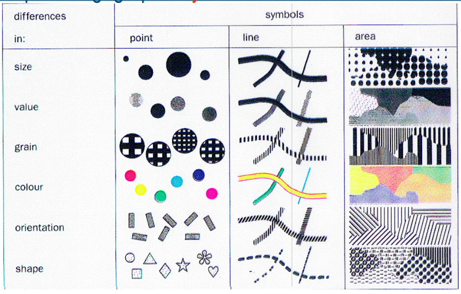
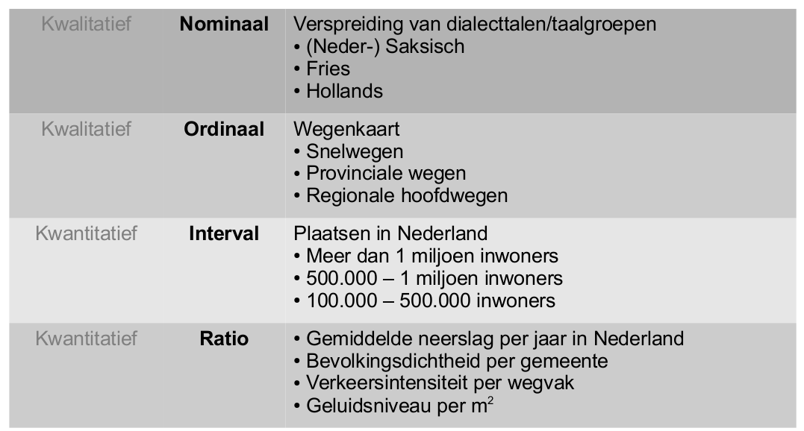

Vormgeving
Les 5: Van Bertin tot Gestalt en visuele variablen
De vijfde les richtte zich op vormgeving en cartografisch design. We leerden over de principes van Bertin, gestalt die effectieve kaartontwerpen versterken. En hoe kleur, contrast en compositie de leesbaarheid en impact van onze kaarten beïnvloeden. Niene benadrukte het belang van doelgroepgericht ontwerpen.
Ook hebben we het gehad over data classificatie. Dit was vooral een theorieles, waar ik heb geleerd over Bertin en zijn principes. En de samenwerking met meetniveaus.
Jacques Bertin was een cartograaf en informaticawetenschapper die fundamentele principes voor cartografisch design heeft vastgesteld. Zijn werk over visuele variabelen – zoals grootte, kleur, waarde, textuur, oriëntatie en vorm – is nog steeds van toepassing op modern kaartontwerp.
Gestalt-principes helpen ons begrijpen hoe mensen visuele informatie organiseren en interpreteren. Door deze principes toe te passen, kunnen we kaarten maken die intuïtiever zijn en beter begrijpen door de gebruiker.

